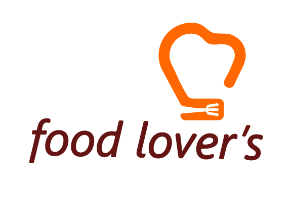
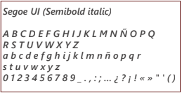
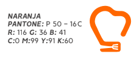
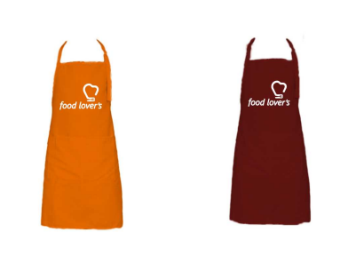
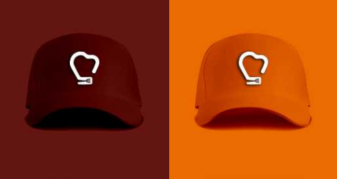
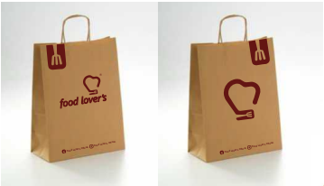
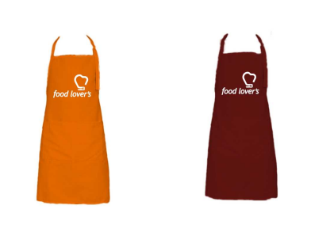
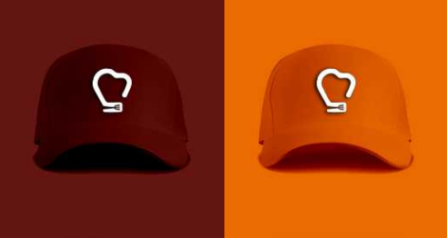
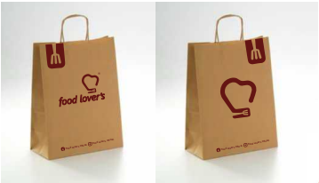

Marca
Marca ¡Checa esta marca!
Realicé esta marca para la empresa Food Lover´s. Para dar solución a esta necesidad de una identidad se pusieron conceptos que fueran incluyentes, que el nombre fuera fácil de recordar y de pronunciar. Al tratarse de comida mexicana tradicio- nal, se hizo uso del concepto de amor a la comida mexicana, del gran sabor que tiene y de como junta a las familias mexicanas para disfrutar y compartir los alimentos. Es por eso que el nombre de la marca es Food Lover’s (amantes de la comida). Aparte de la tradición se busca que sea moderna y llamar a todo tipo de público preponderando en los jóvenes, es por esto que se optó por el nombre en inglés.
Logotipo
 Esta marca esta resuelta con un imagotipo, es una combinación de un logotipo y un signo símbolico. Está hecho a nivel abstracto. Para la creación del signo se ocuparon los siguientes conceptos que correponden a conceptos rectores dentro de una cocina: gorro de chef, guante de cocina, corazón y un tenedor.Para el logotipo se buscó que la tipografÍa fuera juvenil, legible, con un buen peso y que tuviera movimiento. Así que se eligió Segoe UI esta es una fuente que es exible porque admite gran variedad de signos, idiomas, etc. Pertenece al estilo sans serif, y su forma es vérsatil, manejable y es juvenil porque es una tipografía diseñada para pantallas e impresio nes, tiene buena legibilidad.
Tipografía corporativa
Segoe UI. Esta tipografÍa tiene cumple con las caracterÍsticas descritas anteriormente, es una buena tipografía porque posee una amplia familia, que hace uso de diferentes grosores y tamaños lo que hace que encaje con las necesidades que queramos.
Colores corporativos
Los colores Naranja y Rojo Vino son los seleccionados para esta marca. El color naranja transmite innovación, modernidad, juventud, diversión y se asocia con los alimentos, esto es lo que buscamos en nuestra marca. El color rojo vino, amor, energía, poder, además de asociarse con el sentimiento de ser llamativo y eso queremos en nuestra marca. Juntos nos dan son colores cálidos y son análogos por lo que combinan bien.
Aplicaciones
Se muestran algunas aplicaciones de la marca, como la papelería, en mandiles, gorra y bolsas.
  
 